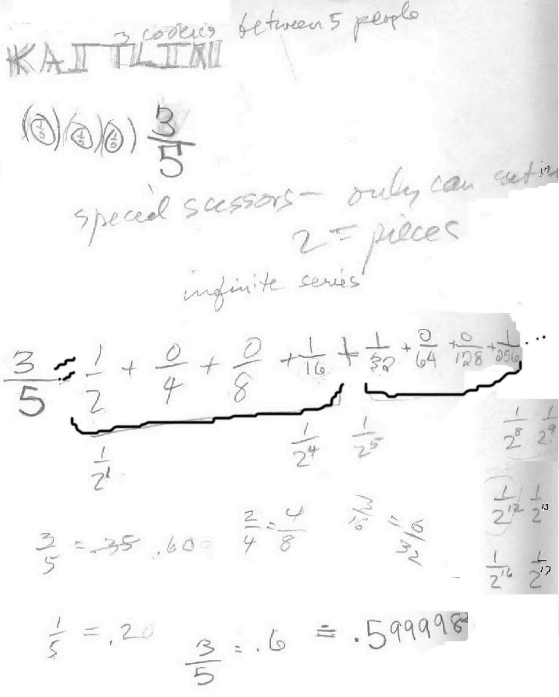
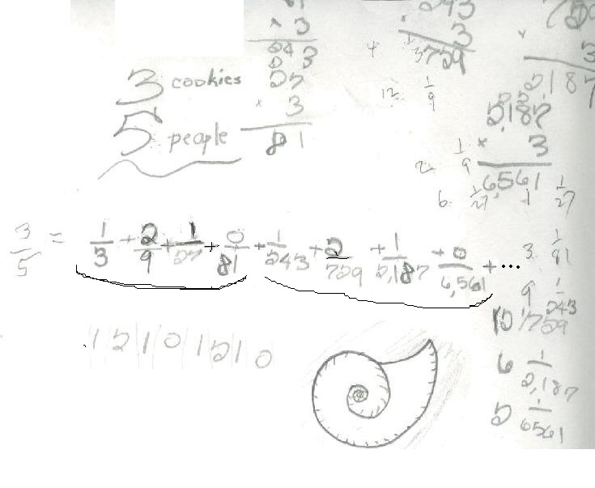

Kaitlin shares 3 cookies between 5 people- 3 ways
Kaitlin figured this problem out 3 ways:
1. She cut each cookie into 5 pieces. Each person would get 1/5 of each, so each person would get 3/5 of a cookie.
2. Then Don told her there was a new rule: do the same problem, but now she had to use special scissors that only cut into 2 equal pieces!

Kaitlin came out with an infinite series = 3/5. Notice all the arithmetic she used in finding each denominator. Notice the patterns in the numerators 1001 1001... And the pattern in the denominators were powers of 2. Then Don asked Kaitlin if she would add these fractions in the infinite series. Don knew she would get decimals on the calculator , so they talked about fractions written as decimals. She thought 3/5 = .35, which led to a discussion about what the fraction 3/5 means. She realized that a fifth of a dollar = 20 cents, so 1/5 = .20 = .2 then 3/5 = .6 . Kaitlin added the fractions in the series on a calculator : 1'2 + 1'24 + 1'25 + 1'28+ 1'29+ 1'212+ 1'213+ 1'216+ 1'217 . She got .599998, very close to .6 ! So the infinite series approaches .6 or 3/5.
3. For the 3rd way to share 3 cookies between 5 people, Don suggested using new scissors that only cut into 3 equal pieces. Here is Kaitlin's work:

Kaitlin realized that in base 3 one can use only 0's, 1's and 2's and the places are 1, 3, 9, 27, ... or powers of 3. Again she saw patterns in the denominators as well as in the numerators, so 3/5 = .12101210... written with the numerators, as an infinite trimal.